Signal Notes
A Closer Look: 'God Loves BEPE' on the Chia Blockchain
2026-07-07
Why One AI Model Not Flinching at 'Cybersecurity' Caught My Attention
2026-07-15
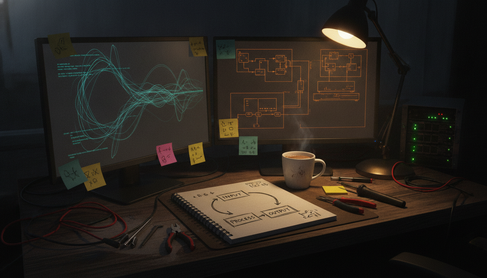
Why Anthropic's Loop Engineering Course Caught My Eye
2026-07-12
The Banana Lab: Building a Real Production Pipeline for MonkeyZoo Comics
2026-07-13
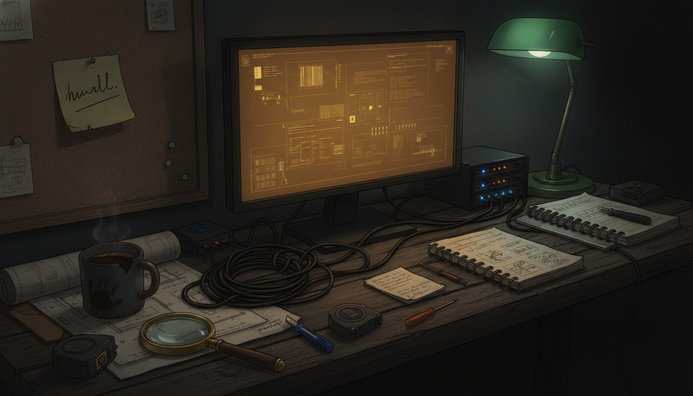
Why a Bare Link From @tonysimons_ Made the Cut
2026-07-15
A volume number worth noticing: BEPE crosses 70,000 XCH on TibetSwap
2026-07-15
A closer look at BEPE's burn heavy mint claim, and what is missing from it
2026-07-08
Why a Blunt List of Business Values Caught My Attention
2026-07-16
Bonsai 27B and the Push to Get Real Reasoning Onto a Phone
2026-07-14
Draft needed: bookmark 2074489604225282175
2026-07-07
Draft needed: bookmark 2074776204297621977
2026-07-08
Draft needed: bookmark 2075291933124051173
2026-07-09
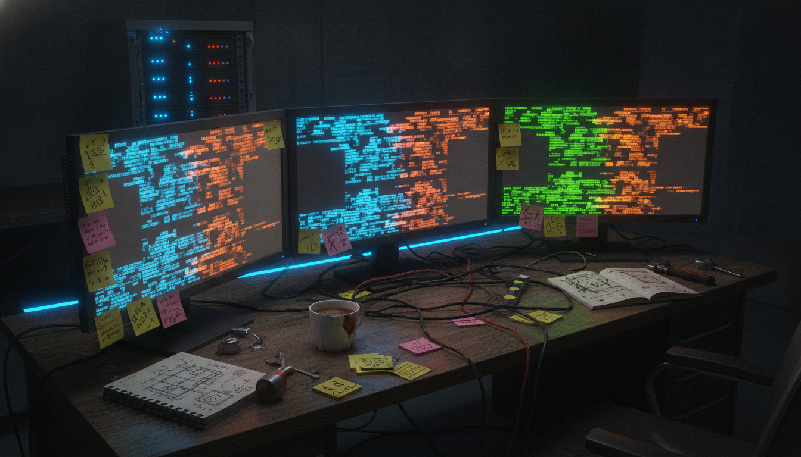
A Builder's Quick-Fire Take on Grok, Codex, Claude Code, and Gemini
2026-07-12
Why a Joke About Selling Everything Says a Lot About a Community
2026-07-14
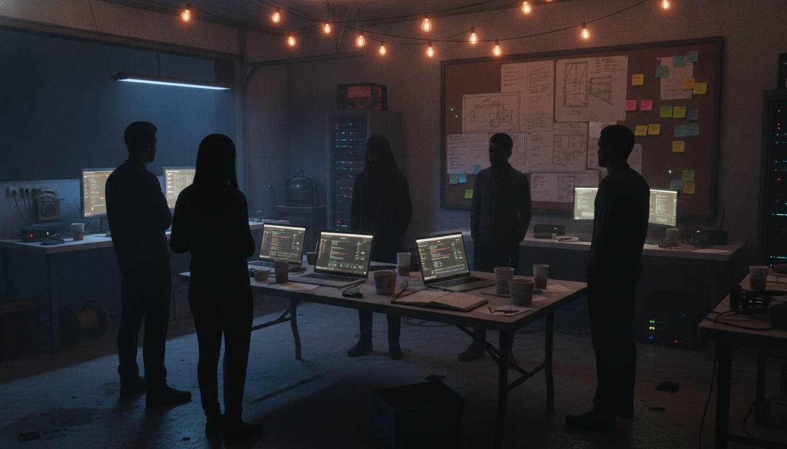
The Part of Chia That Has Nothing to Do With Code
2026-07-14
A Small DCA Update Points to a Bigger Chia Analytics Habit
2026-07-15
Why a Pile of Poop Emojis Caught My Attention on Chia's Discord
2026-07-15
A Chia Gaming Project Starts With the Boring but Important Part: the Prize Pool Contract
2026-07-11
A GM Post, a Cool Idea, and a Protocol Name I Can't Quite Place
2026-07-15
A closer look at the Chia prefarm dumping debate
2026-07-15
Why One Chia Post About Proof of Space Time 2 Has Me Thinking Past the Price Chart
2026-07-14
Circuit's First Surplus Auction Just Wrapped, and the Mechanism Behind It Is Worth Understanding
2026-07-15
Why One Executive's AI Workflow Got Turned Into 9 Diagrams
2026-07-11
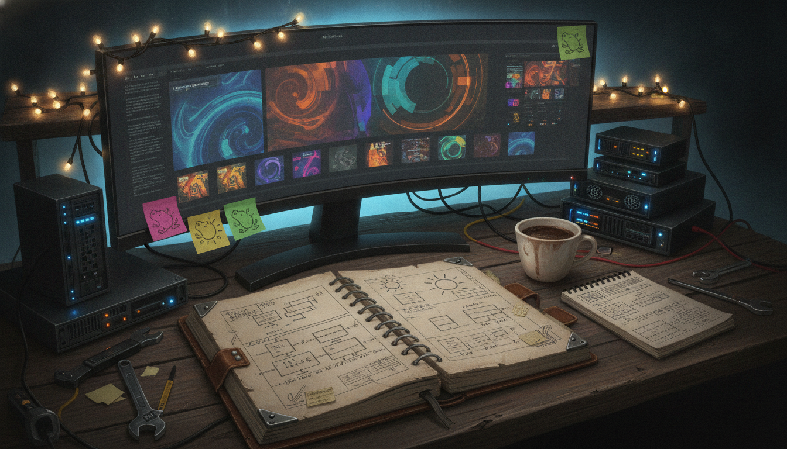
A Closer Look at God Loves BEPE, a New Chia NFT Drop Built Around Burns
2026-07-12
A Closer Look at DIG Network's Chia GitHub Repos
2026-07-12
The Duct Tape Fix That Says More About Amazon Listings Than About the Pole
2026-07-16
Trying to Explain a Meme Coin to Someone Who Is Not Chronically Online
2026-07-15
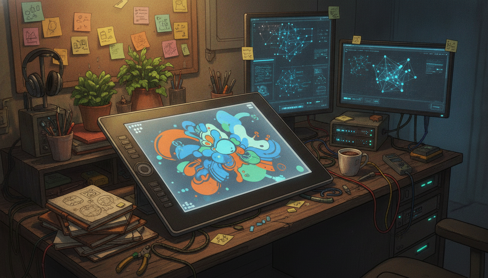
FlipThisFoundry Update: Layers Just Got Faster and Easier to Navigate
2026-07-12
FlipThisVideoMaker: The Render Pipeline Just Got a Lot Sturdier
2026-07-12
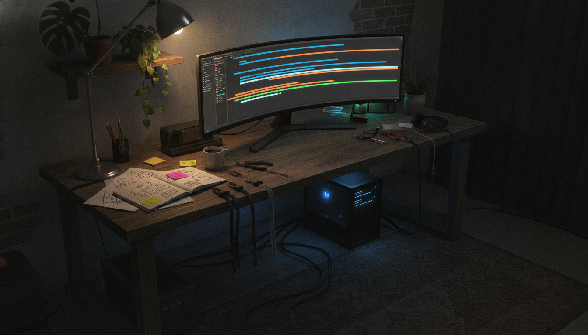
FlipThisVideoMaker: Render Profiles, Crash Recovery, and a Validated Local Studio
2026-07-13
Four AI Tools, One Week: My Honest Notes on Grok, Codex, Claude, and Gemini
2026-07-12
Why a Simple Question From Fry Networks Says a Lot About DePIN Growth
2026-07-15
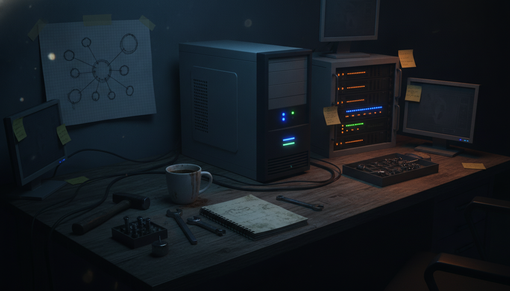
How a 744-Billion-Parameter Model Runs on 25GB of RAM With No GPU
2026-07-12
God Loves BEPE: Exploring Community Collectibles in the Chia Ecosystem
2026-07-07
A closer look at God Loves BEPE, a meme NFT collection on Chia
2026-07-07
A closer look at God Loves BEPE, a small Chia NFT project taking its time
2026-07-09
The 'God Loves BEPE' NFT Collection: A Chia Community Signal
2026-07-07

A closer look at God Loves BEPE, a small meme-driven NFT drop on Chia
2026-07-07
Beyond the Memes: 'God Loves BEPE' and the Chia NFT Ecosystem
2026-07-07
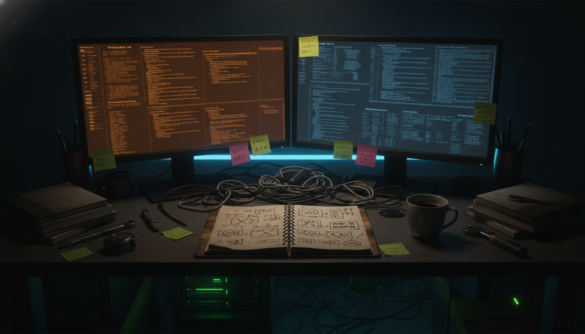
A closer look at the system prompt leak making the rounds from @elder_plinius
2026-07-14
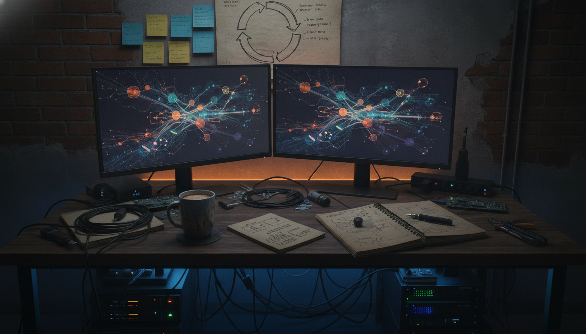
Grok 4.5 and Meta Muse Spark 1.1: What 'Free to Try' Actually Gets You
2026-07-12
What Gene Hoffman's Permuto Trusts comment might actually mean
2025-03-21
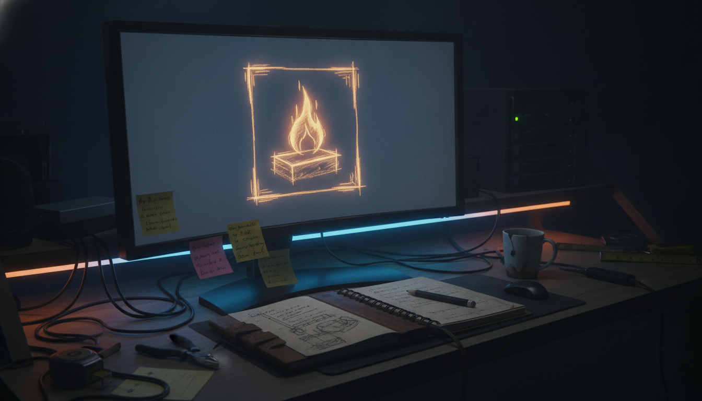
A Closer Look at ICE Labs' Latest Token Burn
2026-07-12
Why a Fake World Cup Disqualification Says Something Real About Mfers on Chia
2026-07-15
A Small Meme Contest, and What It Says About How Crypto Communities Actually Grow
2026-07-07
The MisFitz Slot Machine Is a Small Mechanic Worth Paying Attention To
2026-07-15
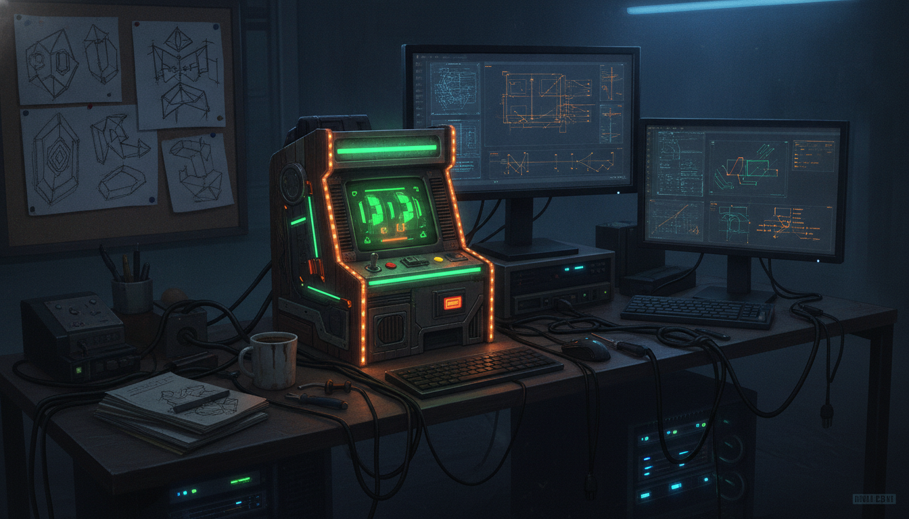
Misfitz Stuffs the Slot Machine With More Chia NFT Jackpots
2026-07-15
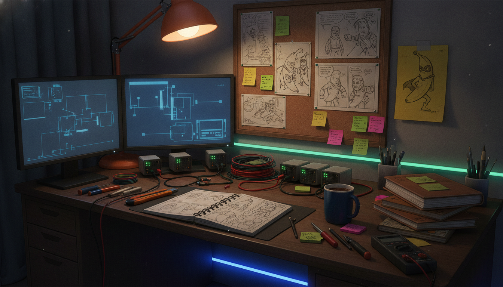
The Banana Lab: MonkeyZoo's Comic Production Workflow Gets a Real Studio
2026-07-12
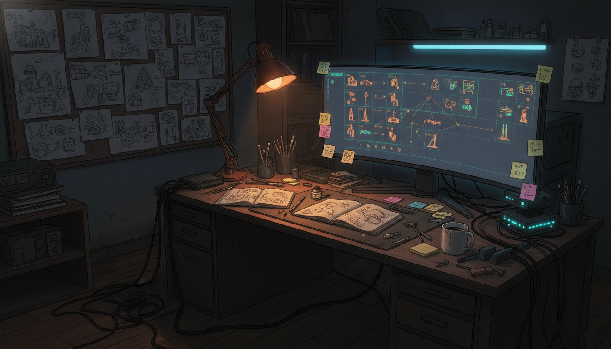
MonkeyZoo Workflow: Locations and Props Get a Home, and the Publish Pipeline Goes Live
2026-07-15
MonkeyZoo Production Workflow: The Expressions Gallery Works on GitHub Pages, and Issue 01 Has a Pipeline
2026-07-16

MonkeyZoo Workflow System: QA and Release Workspaces Just Landed
2026-07-14
NVIDIA's Audio2Face-3D Turns a Voice Track Into a Full Facial Performance
2026-07-15
Why This Peer Globe Caught My Attention
2026-07-12
Peer Globe: What It Looks Like When You Finally See Your Node's Connections
2026-07-12
PF 1718: A Small NFT Listing That Says Something About Chia's Collector Culture
2026-07-13
Why a meme coin leaderboard caught my attention
2026-07-14
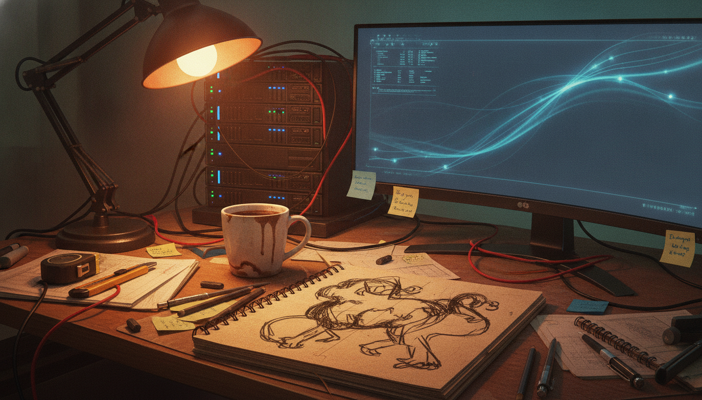
The Quiet Habit Behind a One-Line 'Work in Progress' Post
2026-07-12
Why Running Your Own Node Changes How You See the Chain
2026-07-11
The Smallest Capable Coding Model I've Seen Yet
2026-07-14
What SpaceX Is Actually Trying to Prove on Starship Flight 13
2026-07-16
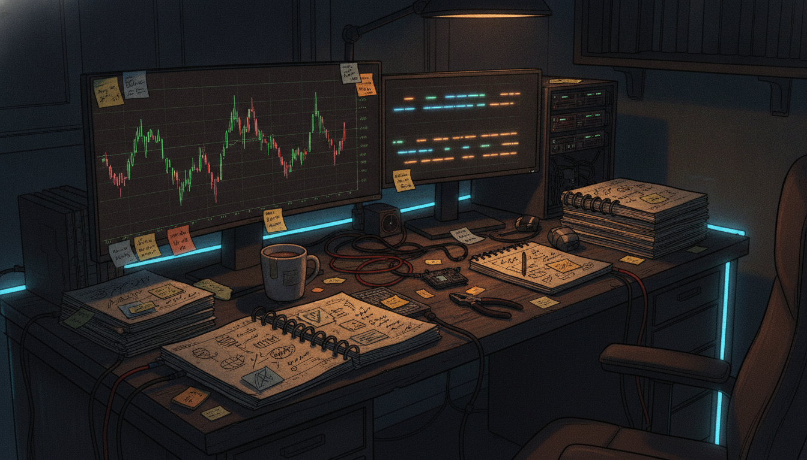
Why #TangGang's calm through this dip caught my attention
2026-07-13
The Calendar Behind the Project: A Small Signal Worth Noticing
2026-07-16
The Sinking Ship: Laying Down the Map Before the Build
2026-07-15
A small Chia tool that helped one collector find a hidden gem
2026-07-15
A closer look at Traitfolio, and treating NFTs like real collectibles
2026-07-03
Traitfolio's new filter makes it easier to track Peel Points across Tang Gang
2026-07-14
What the "God Loves BEPE" NFT Collection Means for Chia Builders
2026-07-07
Why New NFT Chains Keep Cloning the Same Old Ideas
2026-07-12
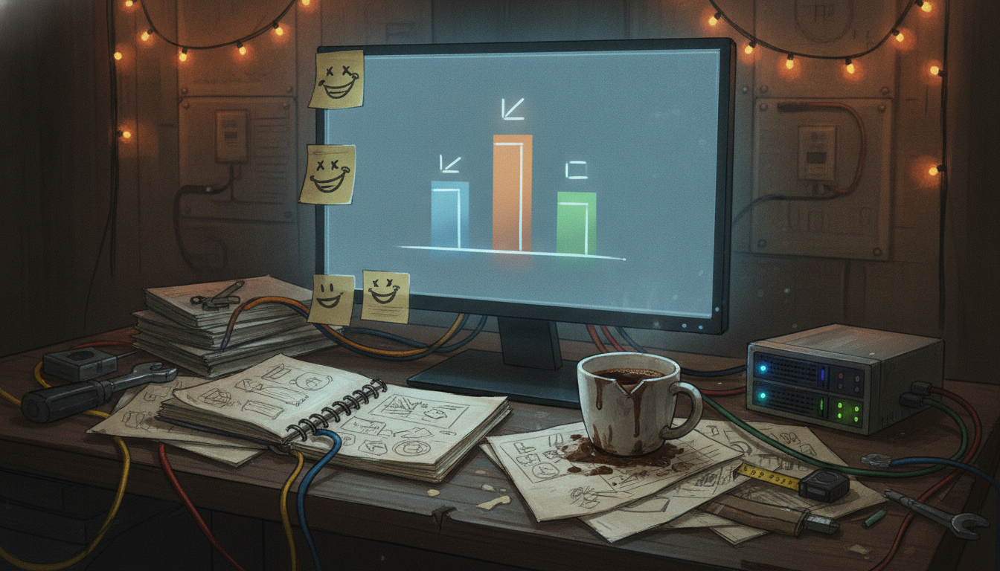
A meme battle scoreboard says more about community than it looks like
2026-07-14
Why a Grumpy XCH Post Caught My Attention
2026-07-09
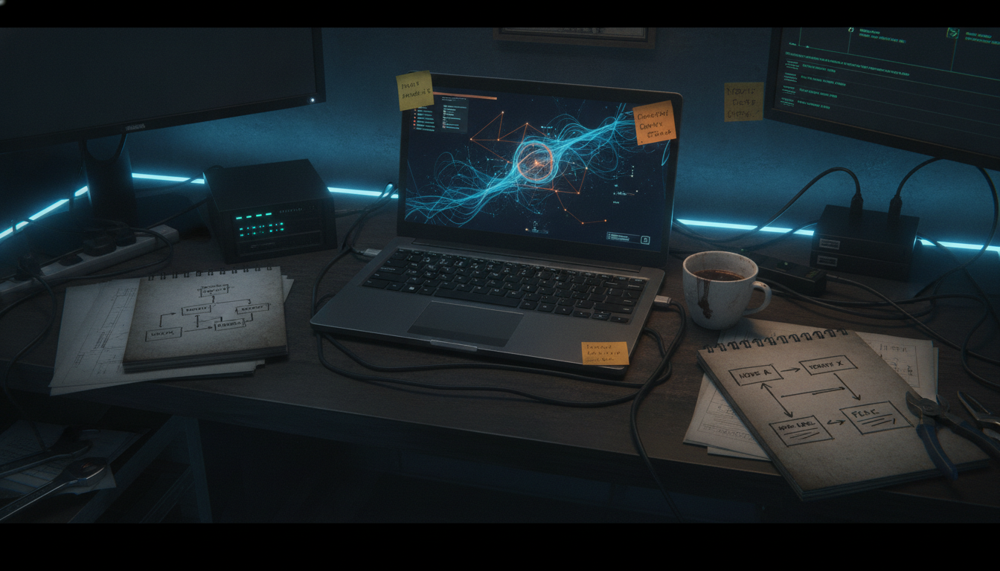
Your Node, Your Truth: A First Look at Zureka's Observatory
2026-07-12